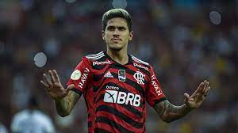

Modelos de carterinha

FÃ CLUBE DO PEDRO
História do Jogador
Pedro Guilherme Abreu dos Santos, conhecido como Pedro, nasceu em Campina Grande, na Paraíba, em 1997. Quando era criança, ele jogava futebol na rua com os amigos, mas só começou a jogar em um time de futebol aos 10 anos de idade.
Em 2011, Pedro foi convidado para fazer um teste no Fluminense, no Rio de Janeiro. Ele impressionou o clube carioca e logo foi contratado para integrar as categorias de base do time.
No início de 2019, Pedro foi contratado pelo clube italiano Fiorentina. No entanto, devido a uma lesão, ele não teve muitas oportunidades de jogar pelo time italiano. Em janeiro de 2020, Pedro retornou ao Brasil para jogar no Flamengo por empréstimo.
Desde sua chegada ao Flamengo, Pedro tem sido peça importante do time, marcando gols importantes e ajudando o clube a conquistar títulos importantes, como a Recopa Sul-Americana, o Campeonato Carioca e o Campeonato Brasileiro. Sua habilidade e desempenho têm sido elogiados pelos torcedores e pelos técnicos da equipe.
Jornada do Jogador
A jornada de Pedro no futebol é uma história de perseverança, talento e dedicação. Com seu esforço e habilidade, ele tem se destacado como um dos principais jogadores do Flamengo e uma das promessas do futebol brasileiro.
Pedro começou sua jornada no futebol jogando na rua com amigos e chamou a atenção de olheiros do Nacional de Patos, onde jogou na equipe sub-11. Em 2011, ele foi contratado pelo Fluminense e, após se destacar nas categorias de base, foi promovido para o time profissional em 2016.
Títulos e Recordes
Pedro é o primeiro jogador a marcar pelo menos 10 gols em cada uma das suas duas primeiras temporadas na Série A do Campeonato Brasileiro desde 2015.
Em janeiro de 2021, Pedro marcou 4 gols em uma única partida, na vitória do Flamengo sobre o Volta Redonda por 4 a 1 pelo Campeonato Carioca, se tornando o primeiro jogador a marcar 4 gols em uma partida desde Adriano Imperador em 2008.
-Campeonato Brasileiro: 2020, pelo Flamengo
-Campeonato Carioca: 2020, 2021 e 2022, pelo Flamengo
-Recopa Sul-Americana: 2020, pelo Flamengo
-Taça Guanabara: 2020 e 2021, pelo Flamengo
-Troféu Mario Jorge Lobo Zagallo (Melhor atacante do Campeonato Carioca): 2021, pelo Flamengo